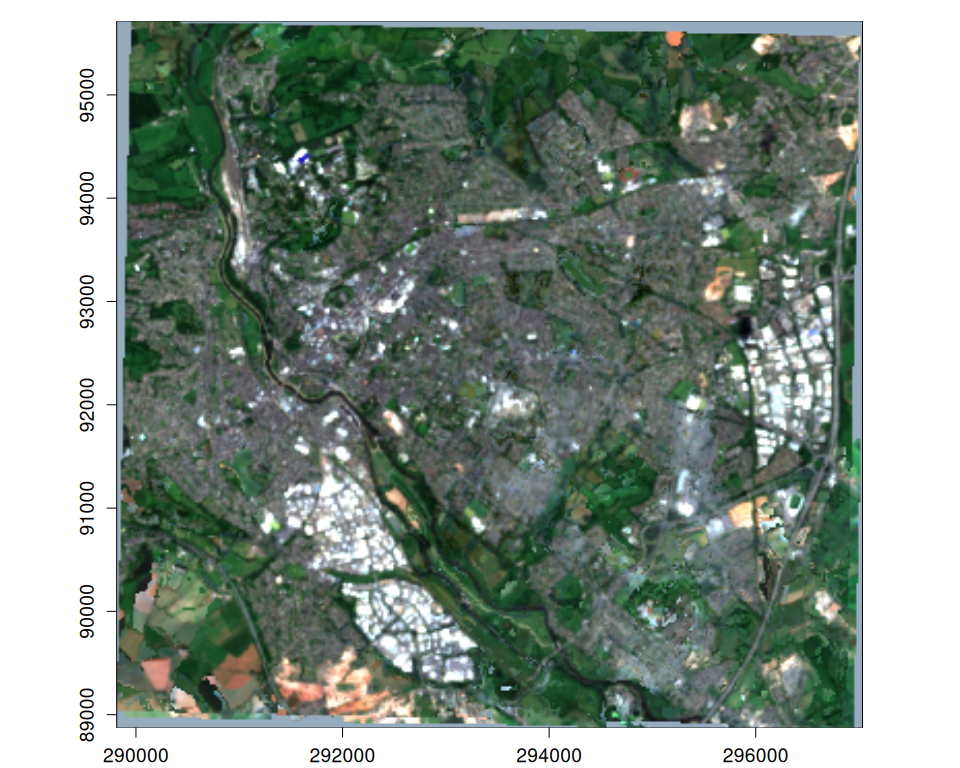

vrtility is an R package that aims to make the best use of GDAL’s VRT capabilities for efficient processing of large raster datasets - mainly with Earth Observation in mind. This package enables the use of GDAL VRT python pixel functions. These numpy based python pixel functions are used to apply cloud masks and summarise pixel values (e.g. median) from multiple images (i.e create a composite image). These main features are made possible by the {gdalraster} and {reticulate} packages. Advanced image compositing and time series filtering is also provided which makes use of gdalraster alonside the {mirai} package for parallel processing.
[!CAUTION] This package is under active development and is likely to change. Contributions and suggestions are still very welcome!
Features
No intermediate downloads - the use of nested VRTs enables the download and processing of only the required data in a single gdalwarp (or gdal_translate) call. This reduces disk read/write time.
Modular design: We’re basically creating remote sensing pipelines using nested VRTs. This allows for the easy addition of new pixel functions and masking functions. but could easily be adapted for deriving spectral indices or calculating complex time series functions.
Efficient parallel processing using gdalraster and mirai
Advanced compositing methods that maintain spectral consistency, such as the geometric median and medoid.
Time series filtering functions to improve temporal consistency and reduce noise.
Installation
You can install vrtility from GitHub with:
# install.packages("pak")
pak::pkg_install("Permian-Global-Research/vrtility")Example
Here is a simple example where we:
Define a bounding box and search a STAC catalog for Sentinel-2 data
Create a
vrt_collectionobject - essentially a list of individual VRTs (each making up one image) which we refer to asvrt_blocks in this package.Then, we apply the mask using pixel functions. This simply modifies the XML of the VRT “blocks”.
Because this set of images have more than one common spatial reference system (SRS) we warp the
vrt_blocks to a new spatially-alignedvrt_collectionusingvrt_warp, giving us avrt_collection_warpedobject.These images are then “stacked” (combined into a single VRT with multiple layers in each VRTRasterBand), giving us a
vrt_stackobject.A median pixel function is then added to the
vrt_stack.Finally, we calculate the median composite using the
gdalrasterengine to write the output which, in combination with the mirai package processes the data in parallel across bands and image tiles.
library(vrtility)
# Set up asynchronous workers to parallelise vrt_collect and vrt_set_maskfun
mirai::daemons(6)
#> [1] 6
bbox <- gdalraster::bbox_from_wkt(
wkt = "POINT (144.3 -7.6)",
extend_x = 0.17,
extend_y = 0.125
)
te <- bbox_to_projected(bbox)
trs <- attr(te, "wkt")
s2_stac <- sentinel2_stac_query(
bbox = bbox,
start_date = "2023-01-01",
end_date = "2023-12-31",
max_cloud_cover = 20,
assets = c("B02", "B03", "B04", "SCL")
)
# number of items:
length(s2_stac$features)
#> [1] 3
system.time({
median_composite <- vrt_collect(s2_stac) |>
vrt_set_maskfun(
mask_band = "SCL",
mask_values = c(0, 1, 2, 3, 8, 9, 10, 11)
) |>
vrt_warp(t_srs = trs, te = te, tr = c(10, 10)) |>
vrt_stack() |>
vrt_set_py_pixelfun(pixfun = median_numpy()) |>
vrt_compute(
outfile = fs::file_temp(ext = "tif"),
engine = "gdalraster"
)
})
#> user system elapsed
#> 5.205 0.438 20.548
plot_raster_src(
median_composite,
c(3, 2, 1)
)
Asynchronous download/processing
{vrtility} uses {mirai}, alongside {purrr} to manage asynchronous parallelisation. By setting mirai::daemons(n) before running the vrt pipeline, we can improve performance, depending on the speed of the server holding the data. In some cases this will make little difference for example, the Microsoft Planetary Computer STAC API is already pretty fast. However, for NASA’s Earthdata STAC API, this can make a huge difference. In order to use asynchronous processing, in the vrt_compute function, we need to set engine = "gdalraster" or we can use engine = "warp" if we are downloading multiple images invidivually (This is a much faster approach on Nasa’s Earthdata server).
Using on-disk rasters
We can also use on-disk raster files (or indeed urls) too, as shown here with this example dataset - note that the inputs have multiple spatial reference systems and therefore we need to warp them (as in the above example) before “stacking”. We can plot these vrt_{x} objects using plot() but note that for very large rasters, where we are computing pixel functions, this can be slow and we are better off using vrt_compute to write to disk and then plotting the output.
In this example, we create a medoid composite from the warped collection. Using medoid or other multi-band pixel (e.g. geomedian) functions can be extremely powerful but requires more compute power/time than band-wise pixel functions.
s2files <- fs::dir_ls(system.file("s2-data", package = "vrtility"))[1:4]
ex_collect <- vrt_collect(s2files)
par(mfrow = c(2, 2))
purrr::walk(
seq_len(ex_collect$n_items),
~ plot(ex_collect, item = .x, bands = c(3, 2, 1))
)
ex_collect_mask <- vrt_set_maskfun(
ex_collect,
mask_band = "SCL",
mask_values = c(0, 1, 2, 3, 8, 9, 10, 11),
)
purrr::walk(
seq_len(ex_collect_mask$n_items),
~ plot(ex_collect_mask, item = .x, bands = c(3, 2, 1))
)
# extract a block to use as a template for warping
t_block <- ex_collect[[1]][[4]]
ex_composite <- vrt_warp(
ex_collect_mask,
t_srs = t_block$srs,
te = t_block$bbox,
tr = c(20, 20)
) |>
multiband_reduce(reduce_fun = medoid())
par(mfrow = c(1, 1))
plot_raster_src(ex_composite, bands = c(3, 2, 1))